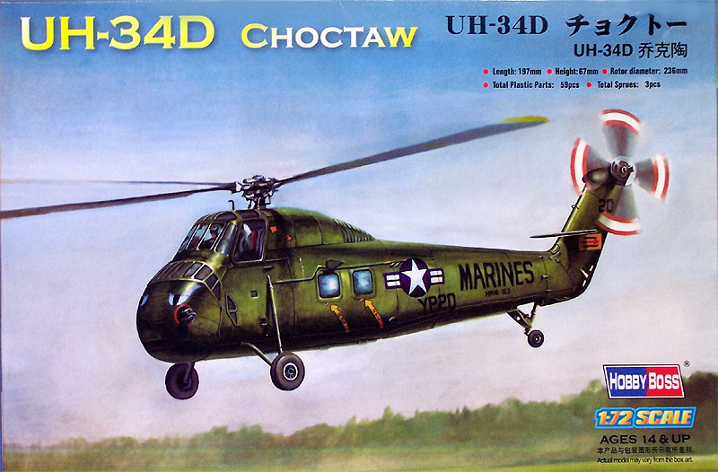
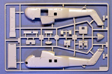
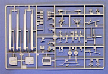
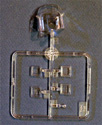
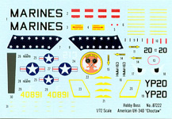

{kind=link}
{kind=link}
{kind=link}
{kind=link}


Hobby Boss 1/72 Sikorsky UH-34D Choctaw

Kit #87222
MSRP $19.95
Images and text Copyright © 2007 by Matt Swan
Developmental Background
Igor Sikorsky.... this was a man of vision without doubt. Just looking back at some of the high points in this mans career can be mind numbing, the development of early World War One aircraft, the very successful flying boats of the depression era and then the successful development of the helicopter and its evolution. Few men have contributed so much to aviation history. Today I want to look at one of his companies post war successes, an aircraft made famous and instantly recognizable to many not only as a Vietnam era workhorse but as a high visibility transport for more than one President of the United States of America – I am talking about the S-58 series of helicopters known better as the H-34, operating under many designations such as Seabat, Seahorse or Choctaw.
In mid 1952 the U.S. Navy issued a requirement for an anti-submarine helicopter with greater capabilities then the Sikorsky S-55 then in service. U.S. Army and Air Force also established a requirement for a new utility helicopter. Sikorsky responded with its S-58, which was essentially a scaled-up version of the S-55 with more than double the power. The S-58 lost both competitions. The Army and Air Force selected the Piasecki tandem-rotor H-21 and the Navy selected the Bell HSL-1. The U. S. Marine Corps, which did not hold a competition, selected the mammoth twin-engine Sikorsky S-56. The HSL-1 proved unsuitable for the shipboard anti-submarine role while the S-56 suffered from development problems and the H-21 production levels could not meet demands. The S-58 as the only readily available alternative and it proved to be an excellent choice for all three services.
The H-34 was the standard helicopter for many ground forces throughout the world. The characteristic fuselage could accommodate 18 soldiers or 12 stretchers. Its primary role was personnel and cargo transport. The aircraft were "slick" meaning that they had no weapons but by August 1962, M-60 machine guns were mounted inside the aircraft. Two machine guns were utilized: one for the crew chief, mounted at the main door and one mounted in the rear window on the opposite side for use by the gunner. During its service in Vietnam pilots discovered that some of the design’s innovative features carried penalties in the combat zone. The high cockpit made it an obvious target, and the drive shaft created a partition that made it difficult for crew chiefs to come to the aid of the cockpit crew if they became injured. The magnesium skin resulted in very intense fires, and contributed to significant corrosion problems. The airframe was also too weak to support most of the weapon systems that were installed in the field in attempts to create an ad-hoc gunship.
Sikorsky built 1,825 S-58s, and UH-34s including the A, C, G, and J models, but the D became the most common. The German Army bought a total of 110 "G" versions, the main users being the army flying units but it was also flown by the German Navy in SAR service. In 1956 the British company Westland acquired a license to build the H-34 and developed a turbine-driven version known as the Wessex. In France both the original version and an up-rated version with two Turbomeca Bastan IV turbines were built and as used transportation and combat helicopters. Beginning in late 1957, and continuing through the early 1960s, millions of people around the world witnessed H-34s transporting the President of the United States. This was the first regular use of helicopters in that role.
Initially ignored by the military it soon became a true workhorse in service with all branches of the U.S. armed forces and ultimately served for many years and in great numbers. The H-34 demonstrated an ability to sustain a substantial amount of combat damage and still return home. The aircrews who flew it in combat recall their service with genuine affection. Production continued up to January 1970, when the last of 1,825 examples was delivered. It was the final evolution of the rotary engine powered helicopter and spanned the gap into turbine-powered craft.
The Kit
Let’s start with a few words about Hobby Boss in general. Hobby Boss is a Chinese based model manufacture that is making a dramatic introduction to the American Modeling community. They have introduced a wide range of low priced 1/72 aircraft and armor kits as well as a good selection of mid level detail 1/48 jet aircraft of subjects neglected by other manufactures and some very nice 1/35 scale armor. It’s not reasonable to expect a model company to simply appear with a wide range of kits not previously seen but more likely to introduce a few new items and a selection of items leased from other manufactures. This seems to be the case here. The 1/72 scale kits are not the Italeri molds but more likely those previously seen under the Easy Model logo. The 1/48 kits are most likely coming out of the Trumpeter work shops and there is speculation that Trumpeter is the actual parent company. Looking at some of the 1/48 scale kits they appear to be close pantographs of larger scale Trumpeter kits. If I had to categorize Hobby Boss kits in general I would say these kits are aimed at the entry level to mid level model builder. Currently these kits are being distributed within the U.S. by Military Model Distributors who we know better as Squadron.
Now, on to the specifics of this H-34 kit. The kit arrives with two large sprues of parts that display very minimal flash in only a few small areas. There are no obvious sink marks and only two injector pins were found inside the tail boom that needed trimming. Exterior surface detail is mostly engraved panel lines that are a little large and deep for the scale. There is not exterior rivet detail and while these helicopters were covered with rivets even at a one to one scale they were not very noticeable. The joint reinforcement panels around the tail boom hinge are heavy and over done. Inside we get a nicely detailed main cargo compartment with canvas seats, a 50 caliber door gun and a floor mounted 20mm cannon. Unfortunately there is no upper roof in this compartment and the modeler will need to fabricate this part. The forward bulkhead is accurately detailed with engine access door and viewing port.



Looking into the front office we have better detail than seen in the old Revell 1/48 H-34 but they still got the cockpit floor wrong and they totally missed on putting any collectives in there. Seats look good and the center consol is okay but the main instrument panel is completely void of detail and there is no decal to help out here. The modeler will have to figure out something on his own here. You may click on the small images at left to view larger pictures. The main rotor head is well detailed and appears fairly accurate for the scale and the rotor blades are molded with droop incorporated into the blade. The clear parts are well done being fairly thin for injection molded pieces with crisp raised frame lines. The flight crew doors are molded in the closed position but with a quick coat of Future you should be able to see the cockpit interior fairly well. During test fitting the three main body parts fit together very well with all panel lines mating up perfectly. The main canopy fit into place well and did not leave and gaps or overhangs. Taking inventory, the kit contains fifty six pieces done in a medium gray high pressure injection molded plastic with six parts in clear plastic for a total of sixty two pieces in the box.
Decals and Instructions

The kit instructions consist of a single A3 and a single A4 sheet of material. The larger sheet is the assembly instructions that opens with the standard safety precautions of modeling followed by nine exploded view assembly steps. There are no real building tips included here or any color codes. The flip side of the instruction sheet simply contains a complete parts map – nowhere does the manufacture provide any interior color codes or chart. The A$ sheet is for exterior painting and decal placement for two aircraft. Here at least we get a couple basic color codes for some Mr. Color paints.
The kit includes a small sheet of decals for two aircraft. The decals are well printed with good print registry, color density and do not appear to be thick. Colors are vibrant but as mentioned earlier we are lacking instrument detail here and the yellow window outlines are given as solid lines when they should be dotted lines (maybe I’m just being picky). We get a few warning markings and service stencils but nothing like we should for this helicopter. The real McCoy was covered with little markings and warnings that would take all day to read
Conclusions
Okay, it certainly looks like an H-34, the model seems to be pretty accurate to the overall outline of the type. The interior is fairly well detailed with only a few inaccuracies. Panel lines and access panels all appear to be located properly. The overall parts fit is good and the decals that are provided look nice. The kit could use a more comprehensive decal set and some interior painting tips would have been nice. Overall it does appear to be a good kit and definitely makes for a good foundation should the modeler what to take it to the next level. There actually are a couple things on the aftermarket that can be used on this kit like a photo etched set from Part and one from Eduard. Either one of these would help to kick this build up a notch and would also address the blank instrument panel issue. Overall this looks like a fairly easy build, I give this kit a fair to good rating.